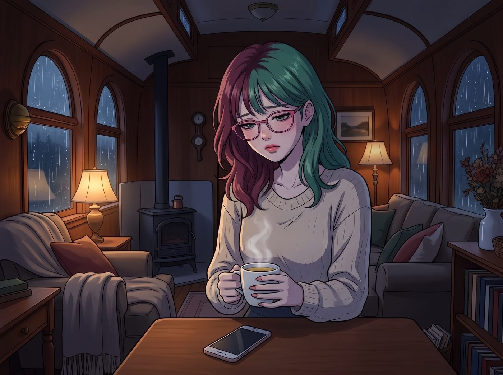

肉做的心

夜深了，雨水有節奏地敲打著二號車廂的車窗。Chloe 和 Max 已經在各自的房間裡睡下，Victoria 也早早戴上了她的真絲眼罩。
車廂角落的會客區裡，只亮著一盞昏黃的小暖燈。
Lily 坐在沙發上，手裡握著一杯 Kate 剛泡好的洋甘菊茶。但在她面前的木桌上，手機螢幕依然刺眼地亮著。上面是一條來自母親的訊息，字面上沒有一句重話，卻句句帶刺：抱怨她錯過了一場重要的家族晚宴，讓父母在親戚面前抬不起頭。
Lily 剛剛回覆了一條：「對不起，母親。我已經為您和父親預約了下週的全身健檢，費用已經從我的帳戶扣除。」
按下發送之後，她把手機倒扣在桌上，深深吸了一口氣，肩膀無力地垮了下來。
一、斯德哥爾摩
「Kate 學姐，」Lily 轉過頭，那雙平時總是充滿算計與理性的眼睛裡，此刻寫滿了迷茫和自我厭惡，「從臨床心理學的角度來看……我是不是有斯德哥爾摩症候群？」
Kate 放下手裡的毛線針，溫柔地看著她：「為什麼這麼說？」
「因為這不符合任何邏輯。」Lily 揉著眉心，習慣性地用術語把自己的脆弱包起來，「那十幾年，對我造成的傷害幾乎是不可逆的。理智上，我非常清楚這是一筆沉沒成本。他們就像一家不斷虧損、還在惡意吸血的母公司，我早就應該進行資產剝離，徹底切斷聯繫。」
她咬著下唇，聲音開始發抖：「可是，每次他們傳訊息來，每次他們暗示自己老了、病了，我就會像個沒有腦子的蠢貨一樣立刻回覆，繼續幫他們處理爛攤子，甚至還會為了錯過一頓飯而內疚。他們那樣對我，我卻還是被牽著走……這不是病態是什麼？」
Kate 沒有立刻回答。她站起身，拿過沙發靠背上那條她親手織的粗毛線毯，輕輕披在 Lily 單薄的肩膀上，然後重新坐下，雙手捧著自己的茶杯。
二、他們失敗的地方
「Lily，妳知道妳父母最大的失敗是什麼嗎？」
Lily 愣了一下：「他們沒有失敗。他們成功地把我變成了一個永遠擺脫不了罪惡感的殘次品。」
「不，他們失敗了。」Kate 輕輕搖頭，聲音溫柔卻很篤定。
「他們花了十幾年，想用最冷的算計、最殘酷的條件交換，把妳訓練成一台只會匯報、沒有感情的機器。他們想把妳心裡所有柔軟的東西都抽乾。」
她伸出手，覆在 Lily 那隻因為用力握著茶杯而骨節泛白的手上。
「可是妳看看現在的妳。妳會因為他們一條訊息難過，會因為他們變老而心軟，妳還是會本能地想去照顧別人——就算是傷害過妳的人。這不是斯德哥爾摩症候群。孩子本來就會愛自己的父母，就算那份愛從來沒有被好好接住過。」
Kate 微微一笑：「妳的心軟和糾結，說明他們再怎麼努力，都沒能殺死妳心裡那個善良的人。他們想要一台機器，但妳到現在都還是一個會痛的人。」
Lily 的眼眶紅了，聲音細得像蚊子：「所以……我不是一台有Bug的機器？」
「妳的心是肉做的，不是鐵做的。」Kate 說，「所以才會痛，才會矛盾。這不是妳的錯。」
三、心軟的許可
Lily 低著頭，很久沒有說話。過了一會兒，她輕聲問：「那我應該怎麼做？繼續這樣……每次都立刻回嗎？」
Kate 想了想。在兒童心理輔導機構工作的這些年，她見過太多被這種問題困住的人，也知道這裡最容易說錯話。
「心軟，不代表妳欠他們無限次。」她慢慢地說，「妳可以心疼他們，同時自己決定什麼時候回、回多少。愛他們跟保護自己，不是只能選一個。」
她指了指那支倒扣在桌上的手機：「還記得妳上次把他們的來電設成靜音，讓它進語音信箱，說想自己決定什麼時候聽嗎？」
Lily 點點頭。
「那就是了。」Kate 溫柔地看著她，「妳沒有切斷他們，也沒有被他們牽著走。妳只是替自己留了一點時間。那已經是很了不起的一步。今天這條訊息，妳也可以明天早上再決定要不要處理，或者先問問我們，再決定要付出多少。妳不用每一次都一個人立刻扛下來。」
Lily 看著那支手機，沉默了很久。然後，她伸出手，把它推到了桌子的另一邊，推到自己夠不著的地方。
「那……健檢的錢，已經付了。」她小聲說，帶著一點懊惱，「這筆要算沉沒成本嗎？」
Kate 忍不住笑了出來：「就當作是妳心軟的學費吧。下次，我們一起慢慢算。」
四、至少今晚
雨還在下。
Lily 靠在 Kate 的肩膀上，裹著那條粗毛線毯，聞著洋甘菊茶的香氣，慢慢閉上了眼睛。
她知道，明天早上醒來，那條訊息還會在那裡；下個月、下一季，他們還會傳來新的抱怨和暗示，她還是會心軟，還是會難受，還是會在該不該回覆之間來回拉扯。那些報表和合規的盔甲，也不會一夜之間就卸下來。
但至少今晚，她允許自己不用去想那些。
至少今晚，她只是一個心是肉做的、有點累的年輕女孩，靠在一個懂她的人肩上，安安靜靜地睡著了。